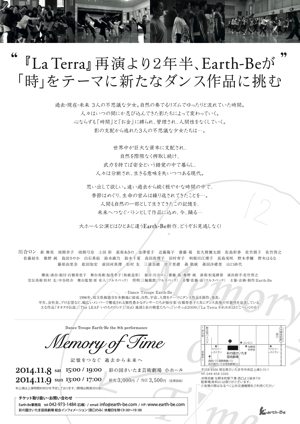
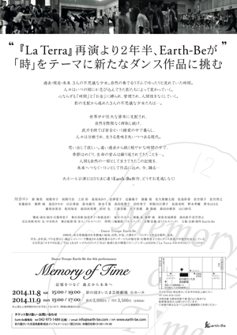
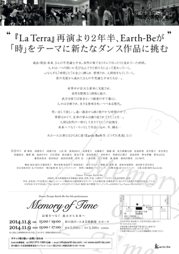

Dance troupe Earth-Be the 8th Performance
Memory of Time 記憶をつなぐ 過去から未来へ
La Terra 再演より2年半、Earth-Beが「時」をテーマに
新たなダンス作品に挑む
過去・現在・未来 3人の不思議な少女。
自然の奏でるリズムでゆったりと流れていた時間。
人々はいつの間にか忍び込んできた影たちによって変わっていく。
心ならずも「時間」と「お金」に縛られ、管理され、人間性をなくしていく。
影の支配から逃れた3人の不思議な少女たちは...。
世界中が巨大な資本に支配され、
自然を際限なく搾取し続け、
武力を持てば安全という錯覚の中で暮らし、
人々は分断され、生きる意味を失いつつある現代。
思い出して欲しい。遠い過去から続く穏やかな時間の中で、
季節はめぐり、生命の営みは繰り返されてきたことを...。
人間も自然の一部として生きてきたこの記憶を、
未来へつなぐバトンとして作品に込め、今、踊る...。
大ホール公演とはひとあじ違うEarth-Be新作、どうぞお見逃しなく!
- 公演日時2014年11月8日（土）15:00 , 19:00 / 9日(日)13:00 , 17:00
※両日とも開場は開演30分前 - 場所彩の国さいたま芸術劇場 小ホール ＞ 彩の国さいたま芸術劇場公式サイト
- チケット料金前売り 3,000円 / 当日 3,500円 （全席自由）
- 構成・演出・振付石橋寿恵子
- 舞台美術加茂孝子（和紙造形）
- 振付川合ロン / 斉藤 萌 / 椎野 純
- 演奏松延耕資
- 演出助手佐竹啓之
- 宣伝美術松村 友 / 中谷皓介
- 舞台監督原 有人（フルスペック）
- 照明三輪徹朗（フルスペック）
- 音響佐藤 宙（フルスペック）
- 主催・企画・制作Earth-Be
- 問い合わせEarth-Be info@earth-be.com
石橋 tel&fax 042-973-1484
※チラシ画像をクリックするとPDFファイル(8.3MB)で開きます
 

